Wine Gallery
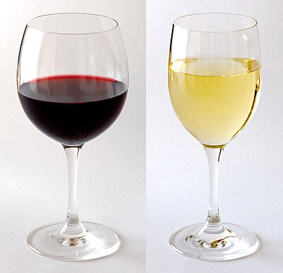
Red & White
A classic side-by-side comparison of red and white wine — the two principal styles that define the wine world.
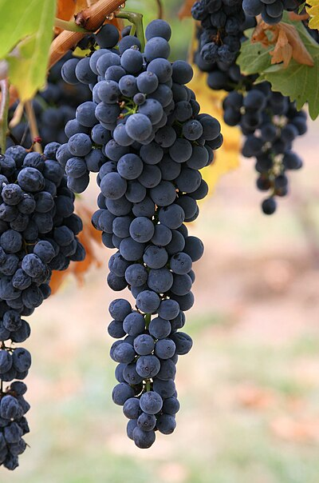
Wine Grapes
Ripe wine grapes on the vine, ready for harvest — the raw ingredient from which all wine begins.
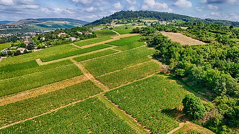
Burgundy Vineyards
The rolling vineyards of Burgundy, France — one of the world's most revered wine regions, home to Pinot Noir and Chardonnay.
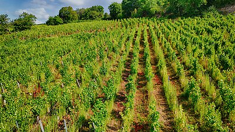
Old Vines
Ancient gnarled vines in a Burgundy vineyard — old vines produce fewer but more concentrated grapes, yielding complex wines.
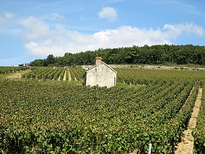
Harvest in Chablis
Picking grapes during vendange (harvest) in Chablis Premier Cru — timing the harvest is the single most critical decision a winemaker makes.
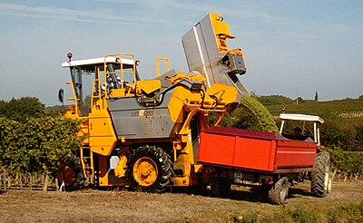
Hand Harvest
Hand-harvesting grapes in Duras, France — manual picking allows selective harvesting of only the ripest clusters.
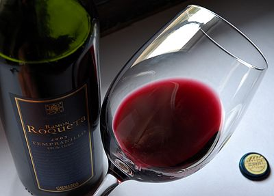
Tempranillo Pour
A pour of deep red Tempranillo wine — Spain's most celebrated red grape, the backbone of Rioja and Ribera del Duero.
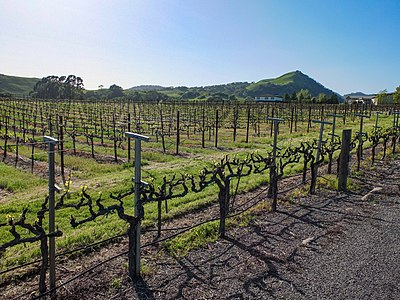
Napa Valley
A vineyard along the Napa Valley road — California's most prestigious wine region, famous for world-class Cabernet Sauvignon.
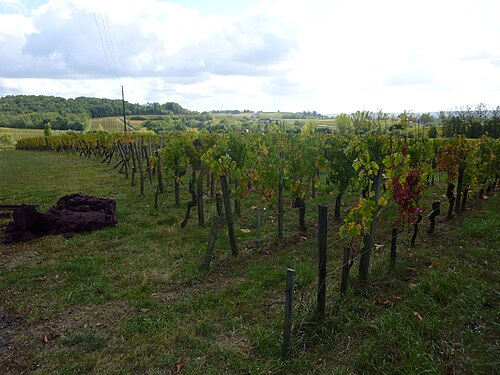
Bordeaux Vineyard
Rows of vines in the Bordeaux wine region — home to Cabernet Sauvignon on the Left Bank and Merlot on the Right Bank.
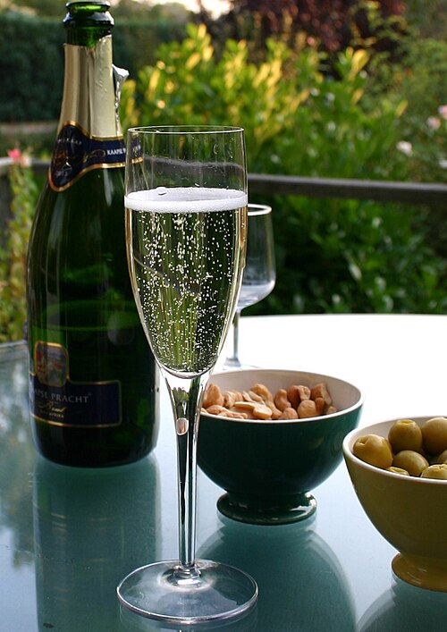
Champagne
A Champagne flute alongside a bottle — the world's most celebrated sparkling wine, made by secondary fermentation in the bottle.
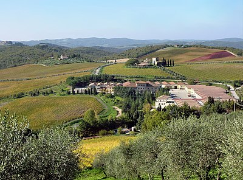
Chianti, Tuscany
A wine-growing holding in the Chianti region of Tuscany — heart of Sangiovese country and one of Italy's most iconic wine landscapes.
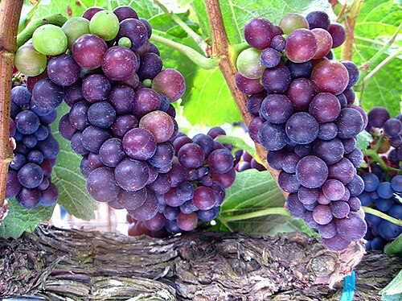
Pinot Noir Grapes
Pinot Noir grapes ripening on the vine — the thin-skinned, finicky grape behind the world's greatest Burgundy reds.
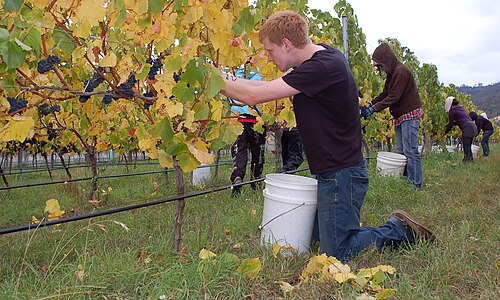
Pinot Noir Harvest
Hand-harvesting Pinot Noir grapes — the delicate clusters require gentle manual picking to avoid damaging the thin skins.

Riesling Grapes
Riesling grapes on the vine — one of the world's most versatile white grapes, ranging from bone-dry to lusciously sweet.
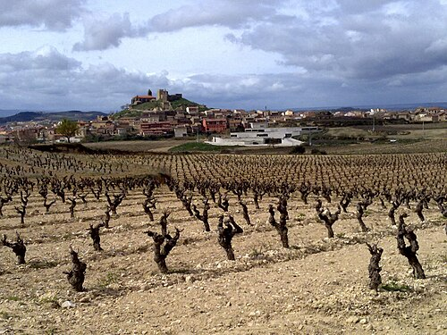
Rioja Wine Country
The rolling vineyards of Rioja, Spain — home of Tempranillo and one of Spain's most celebrated wine regions.
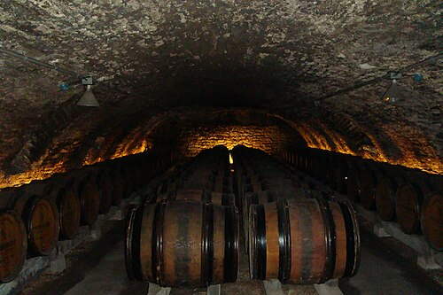
Burgundy Wine Cave
A cellar cave in Burgundy lined with oak barrels — where wine patiently ages, gaining complexity and depth over months or years.
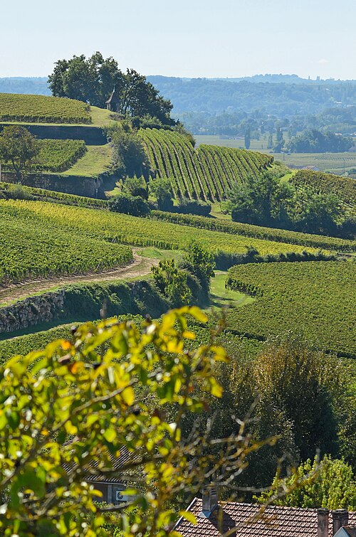
Saint-Émilion
The vineyards of Saint-Émilion on Bordeaux's Right Bank — Merlot-dominant wines from one of France's most picturesque wine towns.
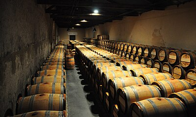
Bordeaux Chai
The barrel cellar (chai) at Château Kirwan in the Margaux appellation — Bordeaux châteaux age their wines in new French oak for 18–24 months.